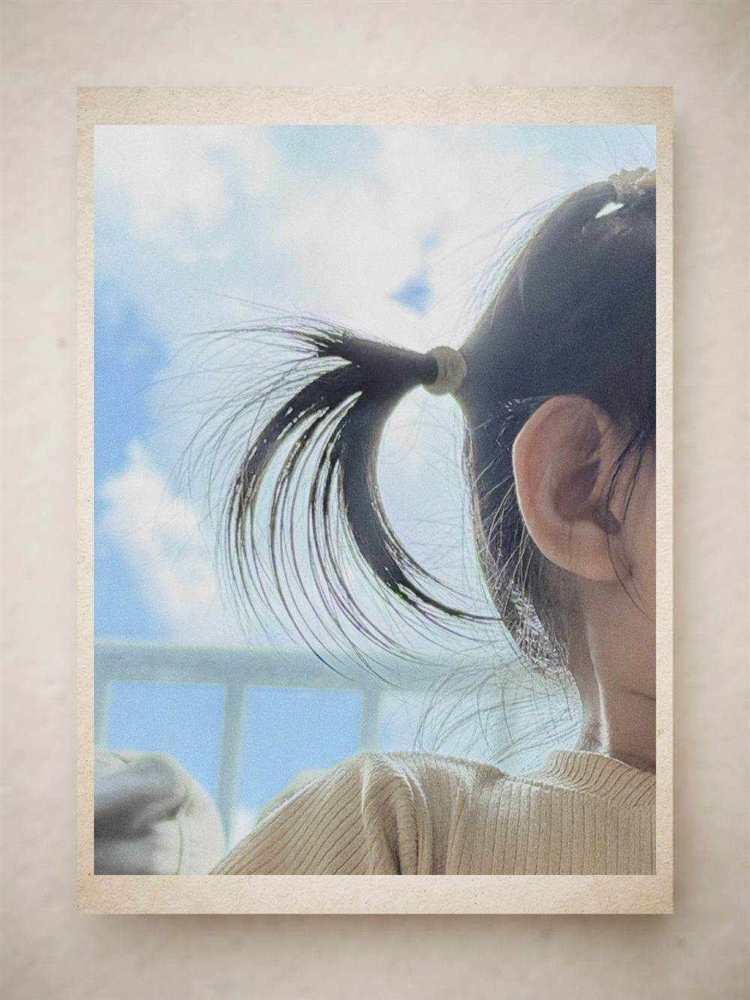
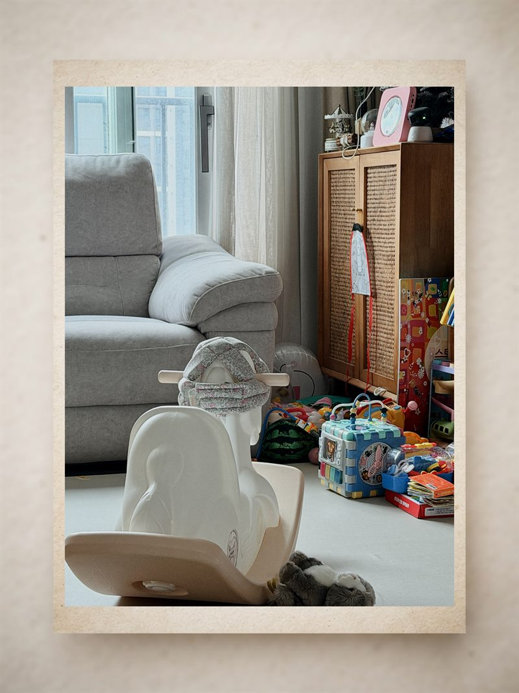
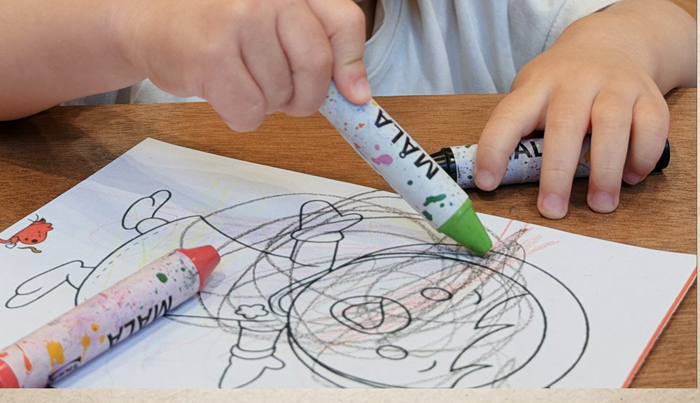

반짝이는 주말 · 1기
아이 생년월일을 알려주시면, 타고난 기질을 읽어 이번 주말에 뭘 해보면 좋을지 보내드립니다.

9월 한 달 · 무료
아이마다 반짝이는 자리가 다릅니다.
진짜 그 일을 하는 사람과 보내는 한 시간,
그리고 근처에서 이어지는 짧은 여정.
우리 아이가 어느 결인지,
먼저 읽어드릴게요.
주말마다 아내와 "이번 주엔 어딜 데려가지"를 고민합니다. 결국 키즈카페에 가요. 가면 아이는 혼자 놀고 저는 벤치에서 폰을 봅니다. 같은 공간에 있는데 각자 시간을 때우는 하루가 됩니다.

벤치에서 폰을 보는 게 게을러서가 아니라는 걸 압니다. 뭘 해야 할지 모르기 때문입니다. 저도 그랬으니까요.
그래서 하루를 통째로 설계해 둡니다. 진짜 그 일을 하는 사람과 보내는 한 시간, 그리고 근처에서 이어갈 산책이나 짧은 여정까지요. 아이 집중력은 한 시간이면 충분하거든요. 나머지는 아이랑 걸으면서 그 시간에 대해 이야기하는 데 씁니다.
아빠가 할 일도 정해놓습니다. 아이 옆에서 무엇을 봐야 하는지, 어떤 순간에 뭐라고 물어야 하는지요. 만들거나 가르치실 필요는 없어요. 맡기고 나오는 자리가 아니라, 아이 눈이 반짝이는 순간을 아빠가 알아보는 자리를 만드는 게 목적입니다.
저는 제가 뭘 좋아하는지 모른 채로 어른이 됐습니다. 수학 학원, 영어 학원은 다녔는데요. 우리 애는 안 그랬으면 해서 이걸 만듭니다.
아직 시작 전입니다. 저 혼자 하고 있고, 만들기 전에 아이들 이야기를 먼저 듣고 싶어서 기질 리포트를 무료로 보내드립니다. 알려주신 이야기가 그대로 첫 프로그램의 재료가 됩니다.
말디니 드림
아이가 몰입했을 때 나오는 신호 네 가지. 이번 주말에 바로 쓰실 수 있습니다.
타고난 결을 한 장으로 가볍게 읽어드리고, 그래서 이번 주말에 뭘 해보면 좋을지까지 바로 이어집니다.
첫 메일에는 특별 초대가 함께 갑니다. 6팀만요.
기질은 자주 바뀌지 않으니 리포트는 처음 한 번만. 그다음부터는 매주 활동 하나씩 보내드려요.
진짜 그 일을 하는 사람과 보내는 한 시간 + 근처에서 이어갈 짧은 여정으로 짜여 있습니다.
기질을 읽는 데 쓰입니다. 그리고 그게 전부입니다.
무엇을 만들지 정하기 전에 아이들 이야기를 먼저 듣고 싶었어요. 알려주신 것들이 첫 프로그램을 설계하는 재료가 됩니다.
성별은 받지 않습니다. 활동 추천에 성별 편견이 들어가면 안 된다고 생각해서요.
첫 회차는 6팀만 초대합니다
신청됐습니다
아이가 뭘 좋아하는지는 말로 안 나옵니다. 몸으로 나옵니다.
이번 주말에 이것만 보세요.

세 묶음에서 하나씩이라도 나왔다면, 거기서 반짝인 겁니다.
조용히 몰입하는 아이도 있습니다. 소리 지르고 뛰어야만 몰입이 아니에요. 그 아이는 1·2·3번과 5·6번이 세게 나오고, 4번과 9번은 거의 안 나옵니다. 없는 게 아니라 다른 자리에 있는 겁니다.
현장의 몰입은 순간이지만, 이 넷은 며칠에 걸쳐 드러납니다. 이게 진짜 신호예요.
1~9번은 벨기에 뢰번대 Ferre Laevers의 몰입 척도(Leuven Involvement Scale)를 부모용으로 옮긴 것입니다. 마지막 네 가지는 활동 후 반응을 확인하는 항목입니다.